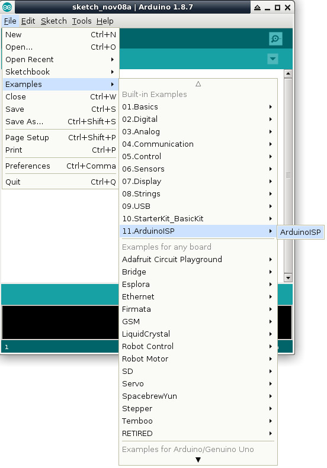
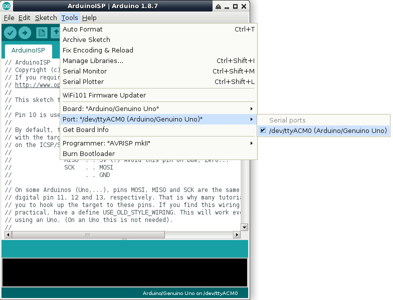
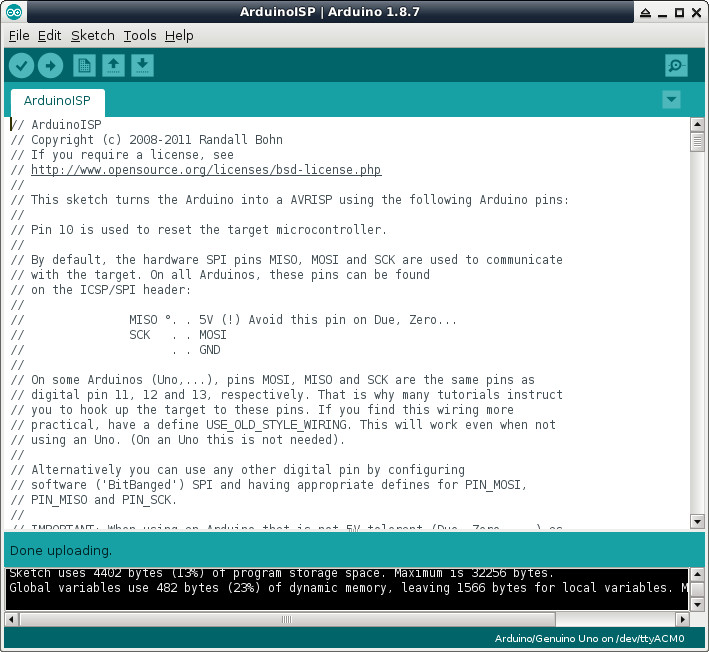
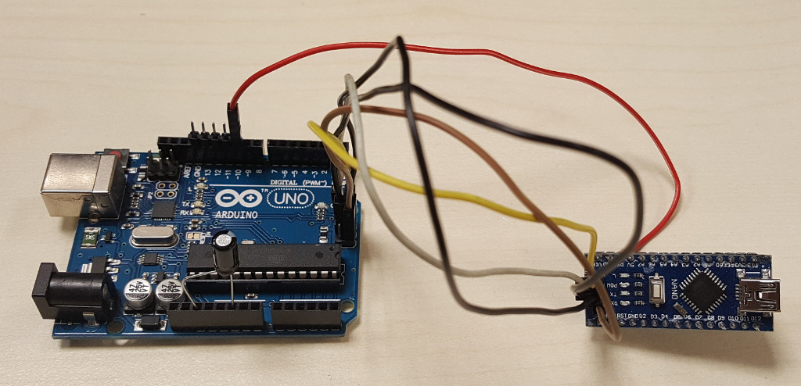
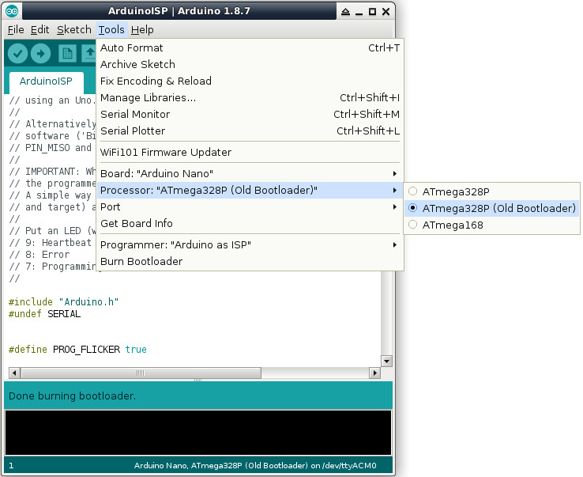
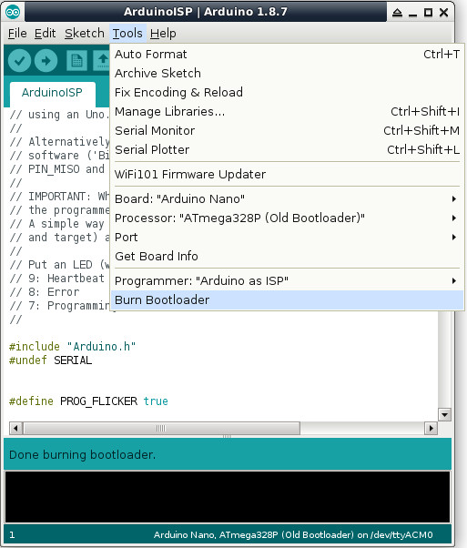
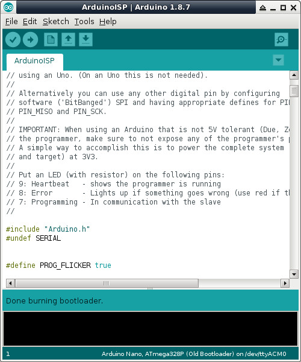
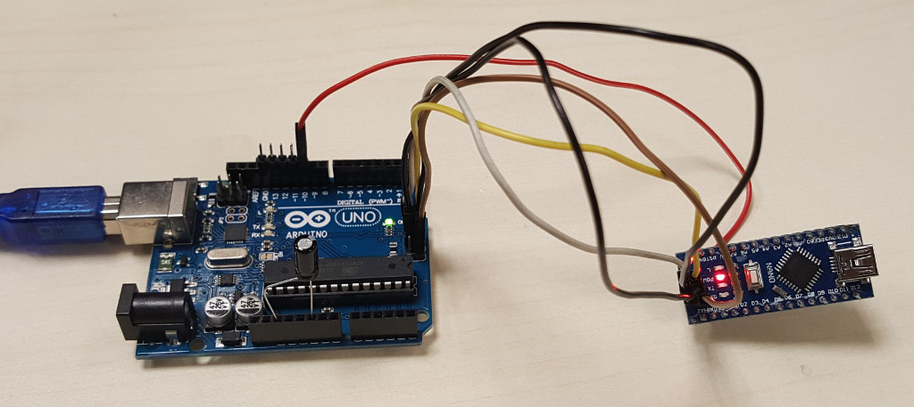

先把Arduino Uno當成一台燒錄器，因此，先下載ArduinoISP



| Arduino UNO | KTduino Nano(CH340G) |
|---|---|
| REST | 10uF |
| Pin10 | RST |
| ICSP1 | ICSP1 |
| ICSP2 | ICSP2 |
| ICSP4 | ICSP4 |
| ICSP5 | ICSP5 |
| ICSP6 | ICSP6 |




